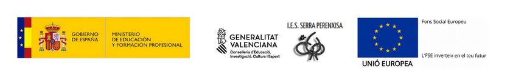
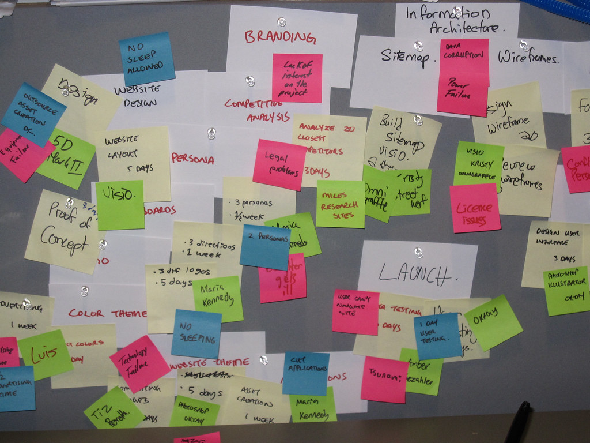
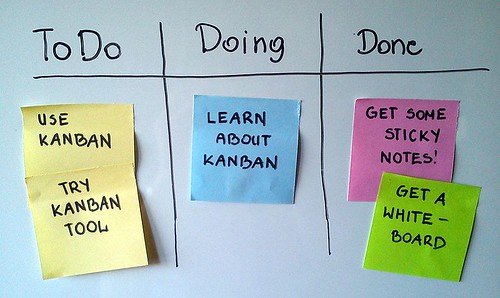
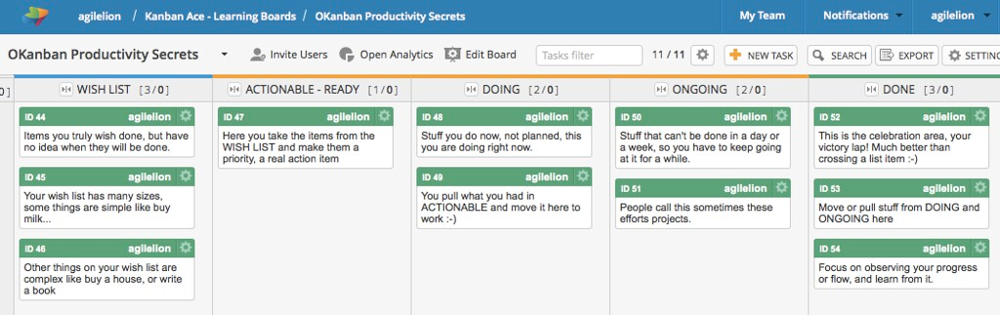

Autores: Carmen Hompanera, Sergi García
Actualizado Septiembre 2022
Licencia
Reconocimiento - No comercial - CompartirIgual (BY-NC-SA): No se permite un uso comercial de la obra original ni de las posibles obras derivadas, la distribución de las cuales se ha de hacer con una licencia igual a la que regula la obra original.
Nomenclatura
A lo largo de este tema se utilizarán diferentes símbolos para distinguir elementos importantes dentro del contenido. Estos símbolos son:
📖 Importante
❕ Atención
💬 Interesante
Índice de contenido
Gestión de proyectos (Project management) 3
¿Cómo desarrollamos un proyecto? 4
¿La organización individual podría ser un proyecto a gestionar? 4
UD02. Organización individual y Colectiva con ClickUp
Introducción¶
En esta unidad, trataremos como organizarnos tanto individual y colectivamente con ClickUp. Para ello, veremos algo de teoría sobre gestión de proyectos (Project management), desde el punto de vista de que organizarnos, tanto individualmente como colectivamente, es como trabajar en un proyecto. Tras ello, veremos el concepto de tablero Kanban y como aplicar los temas de organización mediante la herramienta ClickUp.
Previamente a empezar, definiremos estos tres conceptos:
-
Proyecto: un proyecto es una planificación, que consiste en un conjunto de actividades a realizar de manera articulada entre sí, con el fin de producir determinados bienes o servicios capaces de satisfacer necesidades o resolver problemas, dentro de los límites de un presupuesto y de un periodo de tiempo dados.
-
Project Management: en español, “Gestión de proyectos”, es la coordinación de los procesos, las herramientas, los equipos, recursos y tiempos que tomarán parte en el desarrollo del proyecto.
-
Project manager: en español, “Jefe de proyectos”, es una persona que tiene la responsabilidad general del inicio, la planificación, el diseño, la ejecución, el seguimiento, el control y el cierre exitosos de un proyecto.

¿Cómo desarrollamos un proyecto?¶
A la hora de desarrollar un proyecto deberemos contestar a estas cuatro preguntas:
-
QUÉ vamos a hacer.
-
Debemos definir el objetivo u objetivos que queremos lograr con nuestro proyecto, por ejemplo, dar a conocer nuestro producto, enseñar a hacer una paella, crear un producto, hacer un plan de prevención de riesgos, etc.
-
-
CÓMO lo vamos a hacer.
-
Realizaremos la planificación de nuestro proyecto, definiendo el camino a seguir para lograr nuestro objetivo, así como las tareas o trabajos a realizar.
-
-
QUIÉN se va a encargar.
-
Una vez tengamos las tareas a realizar debemos asignárselas a las personas de nuestro equipo.
-
-
CUANDO se va a hacer cada cosa.
-
Crearemos el calendario de nuestro proyecto, veremos los tiempos de realización de cada tarea, cuando se inicia, cuando se termina y qué tareas son dependientes de otras.
-
📖 Importante: es importante tener en cuenta que la organización de cualquier proyecto debe ser flexible, es decir, por el camino pueden surgir imprevistos o problemas que hagan que debamos cambiar elementos, repensar decisiones y/o mover nuestro calendario.
¿La organización individual podría ser un proyecto a gestionar?¶
Hemos puesto este punto para que os sea fácil relacionar la gestión de proyectos con la organización individual (que os organicéis vosotros mismos) y la organización colectiva (que os organicéis en conjunto).
La organización individual (por ejemplo, anotar deberes, fechas de examen, tareas de casa, eventos importantes, etc.) podría simplemente ser considerado como un proyecto “de nuestra vida” donde nosotros mismo lo gestionamos, siendo el “project manager”.
La organización colectiva (donde varios individuos se organizan), ya es, por definición, una gestión de un proyecto. En algunos casos, puede tener alguna diferencia, como por ejemplo que no tenga “Project manager” o que todos sean “Project managers”.
Tableros Kanban¶
Kanban es una palabra japonesa formada por Kan, que quiere decir visual, y Ban, que significa tarjeta. Por lo tanto, Kanban hace referencia a las tarjetas visuales.
Se trata de un método visual de gestión de proyectos que permite a los equipos visualizar sus flujos de trabajo y la carga de trabajo. Es un tablero que está organizado por columnas donde se muestran las tareas y su situación. Más información en https://es.wikipedia.org/wiki/Kanban
Tenemos diferentes modelos que se adaptan a nuestras necesidades, así tenemos el tablero genérico con el que vamos a trabajar y otros.
Tablero Genérico

Específico para un proyecto

📖 Importante: los tableros Kanban son útiles para la gestión de proyectos, pero también pueden ser útiles para la organización individual y colectiva.
Clickup https://clickup.com es una herramienta para la gestión de proyectos y tareas. Funciona para todo tipo de equipos, pudiendo usarse la misma aplicación para planificar, organizar y colaborar. Esta herramienta nos ofrece documentos, recordatorios, objetivos, calendarios, planificación de horarios, etc.
La herramienta está desarrollada tanto para gerentes como para equipos de trabajo que desean trabajar de manera más organizada, inteligente y eficiente con una plataforma que les ayude a gestionar su proyecto.
Por tanto, podemos resumir que es un software de Project Management, una plataforma sencilla e intuitiva para la gestión de proyectos y tiempos. Sus principales características son:
-
Permite el registro en su web de forma gratuita.
-
Posibilidad de invitar a más colaboradores a tu proyecto.
-
Permite organizar tus espacios de trabajo.
-
Agregar etiquetas con las cuales llevarás el control de tus espacios.
-
Creas tus tareas, defines quien llevará esa actividad y sus tiempos de entrega.
-
Tienes diferentes vistas.
-
Puedes agregar todos los proyectos que desees
-
Información útil para trabajar con ClickUp¶
-
A continuación indicamos algunos enlaces útiles que nos ayudarán a trabajar con ClickUp:
-
Introducción a ClickUp: https://youtu.be/Sy2p7-GjGEI
-
ClickUp y su jerarquía de trabajo: https://youtu.be/SIBCJ63YPFw
-
ClickUp organiza tus proyectos y tareas: https://youtu.be/CBuhH_LF0yk
¿Qué entra para examen?¶
Le llamamos así a este apartado porque para el alumnado siempre es más atractivo que “¿Qué debo aprender en este tema?” :D. A continuación, indicamos de este tema que deberíais preparar para el examen:
-
Conocer los conceptos básicos sobre gestión de proyectos.
-
Conocer que es un tablero Kanban.
-
Ser capaz de crear y gestionar un tablero Kanban (se aprende durante las prácticas).
-
Puede ser tanto un tablero Kanban “en papel” como uno con ClickUp.
-
-
Ser capaz de organizarse individual y colectivamente con ClickUp (se aprende durante las prácticas).
-
Ser capaz de gestionar proyectos con ClickUp (se aprende durante las prácticas).